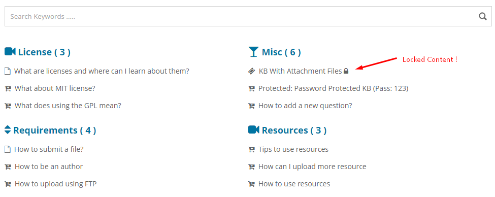
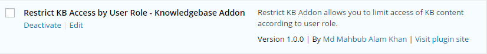
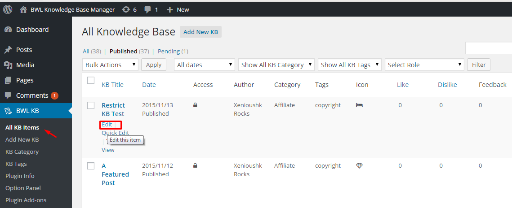
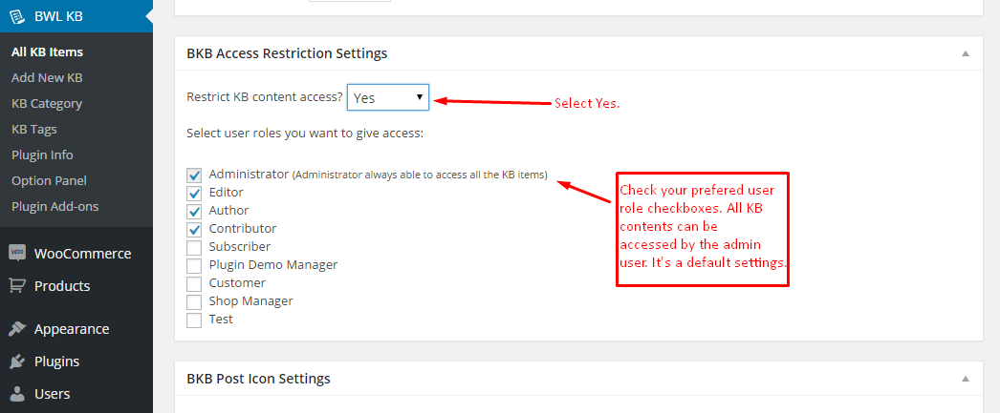
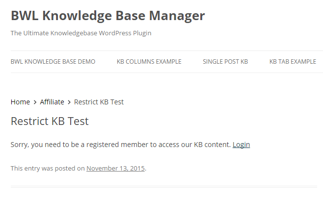
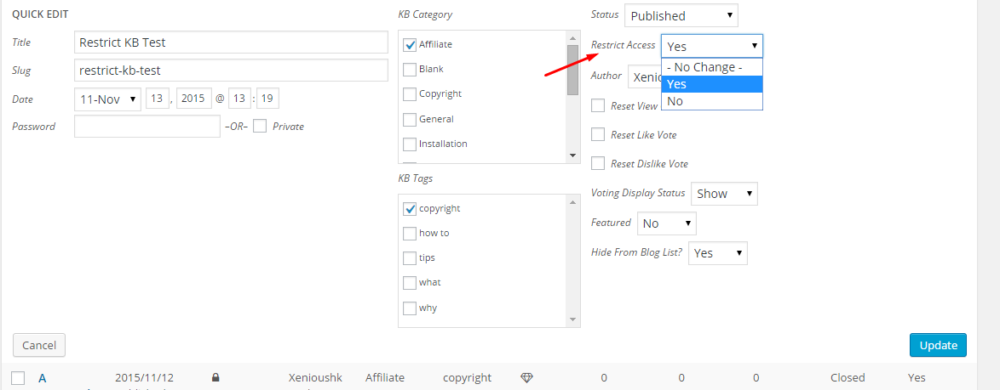
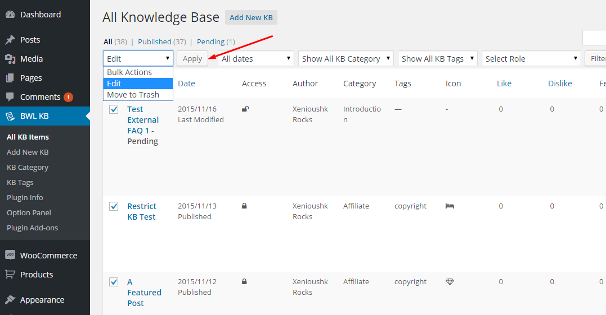
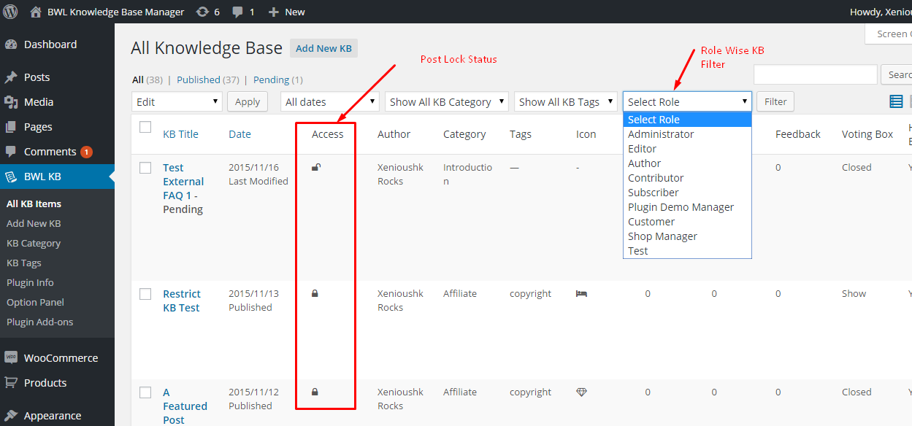

Restrict KB Access by User Role - Knowledgebase Addon
Documentation By
Md Mahbub Alam Khan
Version 1.0.2
Created: 18/11/2015
Last Edited: 16/01/2017
By: Md Mahbub Alam Khan
Email: hkhan.cse@gmail.com
Web Site: bluewindlab.net
Thank you for purchasing Restrict KB Access by User Role - Knowledgebase Addon. If you like this plugin, feel free to rate it five stars at CodeCanyon downloads section. If you encounter any problems please do not give a low rating but contact me first. So I can help you. Thank You!
Table of Contents
- Quick Introduction
- Installation
- How To Use?
- Option Panel
- Upgrade Notes
- Change Log
- Credits
- Conclusion
A. Quick Introduction? - top
Finding a way to manage and restrict knowledge base contents for spacial type of users for your site?
Restrict KB Access by User Role - Knowledgebase Addon provide that easy and awesome option
to secure your knowledge base contents from global access.
Addon gives you the premium and flexible type of settings. So that, you can change/manage your KB contents access with Just few clicks.
You can hide all restricted knowledge base contents from global users or display them with a small lock icon with title to notify them about restricted items.
Addon has extensive option panel that allows you to manage global restriction settings, restricted item display settings, lock icon display settings and
custom message for locked content settings. Addon automatically take care of your side bar knowledge base contents, related knowledge base contents
and custom knowledge template contents too.
Addon comes with Quick/Bulk and custom meta box options to set user roles. By default all contents are allowed to access by administrator users and you can add you can allow more user roles access with just few clicks. It's super easy, fast and powerful.
Checkout plugin outlook in WordPress site-

B. Installation: - top
You need to install BWL Knowledge Base Manager Plugin to use "Restrict KB Access by User Role Addon". Minimum version 1.1.7 required.
- Steps:
- Go to plugins section in your WordPress admin panel and click Add New to install plugin.

- Now, upload the "restrict-kb-by-user-role.zip" file.
- Once plugin successfully uploaded in your server you will get an message to activate it. Click on "Activate Plugin" Link and plugin will be ready to use.
- After activating plugins, you will redirect in plugins section of wp-admin panel and
show new installed plugins information in there.

C. How To Use? - top
- Once installation has been completed successfully,
Addon automatically start handling Knowledge Base categories, tags and
single post locked contents. Here goes the step by step process to lock a Knowledge Base Post.
Step: 01
Go to "All KB Items" and select A Knowledge Base post that you want to lock.

Step: 02
In bottom of the Edit Page, you will find a section "BKB Access Restriction Settings". In that section you will
get options to set Knowledge base post access restriction settings. Finally click save/update button.

Step: 03
Restriction Output:

Quick/Bulk Edit Option:
You can also use Quick/Bulk Edit option to set restriction for multiple posts. To do this go to "All KB Items" section and
then when you put your mouse on a post you will get 'Quick Edit' link. Click on it and you will get option to set Access Restriction. Select
your preferable option and click update.

For Bulk Edit, select multiple post and then click 'Edit' from top of the menu and click "Apply". You will get option to set Access Restriction. Select
your preferable option and click update.

Administrator Panel Filter Option:
You can filter posts by user role from Administrator panel. Which gives you a nice overview about user role based post access. Also, you can see the Knowledge Base post locked/unlocked status from custom column. 
D. Option panel - top
You can easily manage restriction from option panel. You can temporarily disable restriction for all
Knowledge Base posts, display restricted posts with other KB posts, show/hide 'Lock Icon' and set custom message
for locked content. It's super easy to use.

E. Upgrade Notes - top
Please take a backup before update all files and folder.
2017, January, 07 - v 1.0.2
- Replace all files and folders.
2016, June, 07 - v 1.0.1
- Replace all files and folders.
2015, November, 18 - v 1.0.0
- Initial release.
F. Change Log - top
2017, January, 07 - v 1.0.2
- Fixed restricted KB display issue in search list.
- Improved Addon Performance.
- Improved Documentation.
2016, June, 07 - v 1.0.1
- Fix multi-site notification issue.
- Improved Addon Performance.
- Improved Documentation.
2015, November, 18 - v 1.0.0
- Initial release.
G. Credits - top
- Ideas & Coded By Md Mahbub Alam Khan
- BWL Knowledge Base Manager Plugin Plugin By xenioushk
H. Conclusion: - top
Once again, thank you so much for purchasing Restrict KB Access by User Role - Knowledgebase Addon.
Md. Mahbub Alam Khan